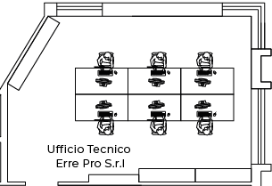

<map name="image_map">
  <area alt="" title="1" href="/Workstation" coords="84,74 110,74 110,57 128,57 128,74 144,74 144,104 84,104 " shape="polygon" (click)="setWorkstationInSession('uff_errepro_1f', 1)">
  <area alt="" title="2" href="/Workstation" coords="202,74 202,104 144,103 144,75 169,75 169,57 187,57 187,74 " shape="polygon" (click)="setWorkstationInSession('uff_errepro_1f', 2)">
  <area alt="" title="3" href="/Workstation" coords="262,75 262,104 203,104 203,74 222,74 222,58 239,58 239,74 " shape="polygon" (click)="setWorkstationInSession('uff_errepro_1f', 3)">
  <area alt="" title="4" href="/Workstation" coords="84,133 84,104 144,103 144,133 127,133 127,149 112,150 112,134 " shape="polygon" (click)="setWorkstationInSession('uff_errepro_1f', 4)">
  <area alt="" title="5" href="/Workstation" coords="202,132 203,104 144,103 144,133 171,133 171,149 187,149 186,133 " shape="polygon" (click)="setWorkstationInSession('uff_errepro_1f', 5)">
  <area alt="" title="6" href="/Workstation" coords="262,134 262,105 203,105 203,134 223,133 223,149 238,149 238,133 " shape="polygon" (click)="setWorkstationInSession('uff_errepro_1f', 6)">
</map>
